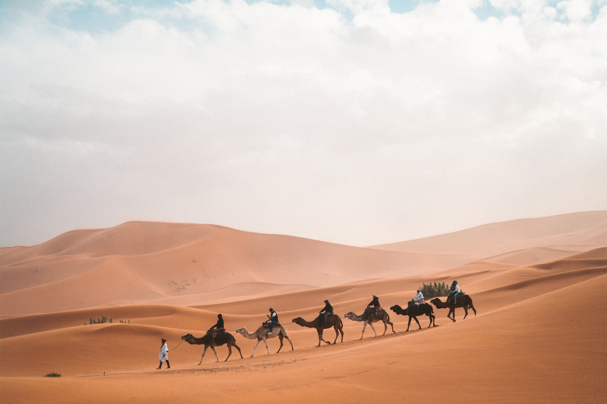
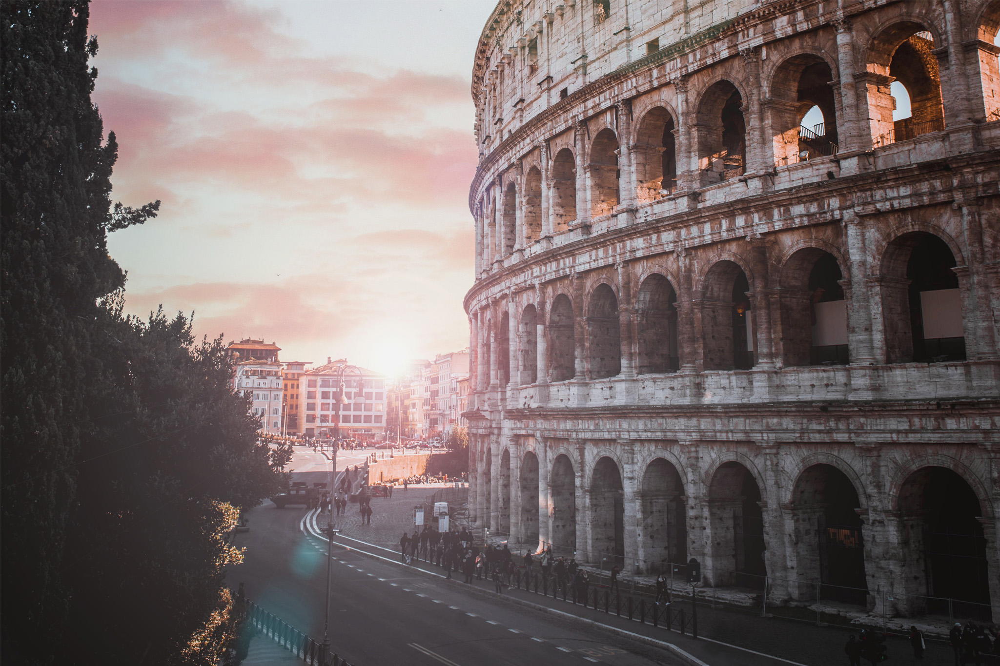
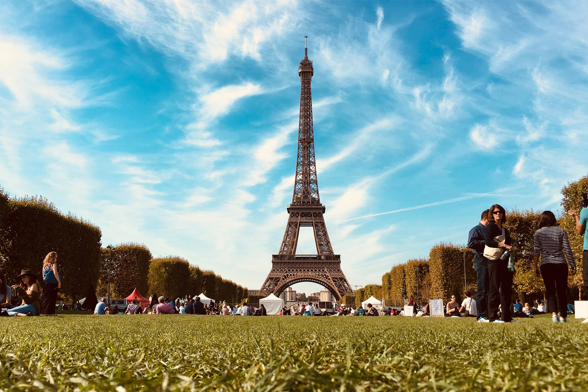
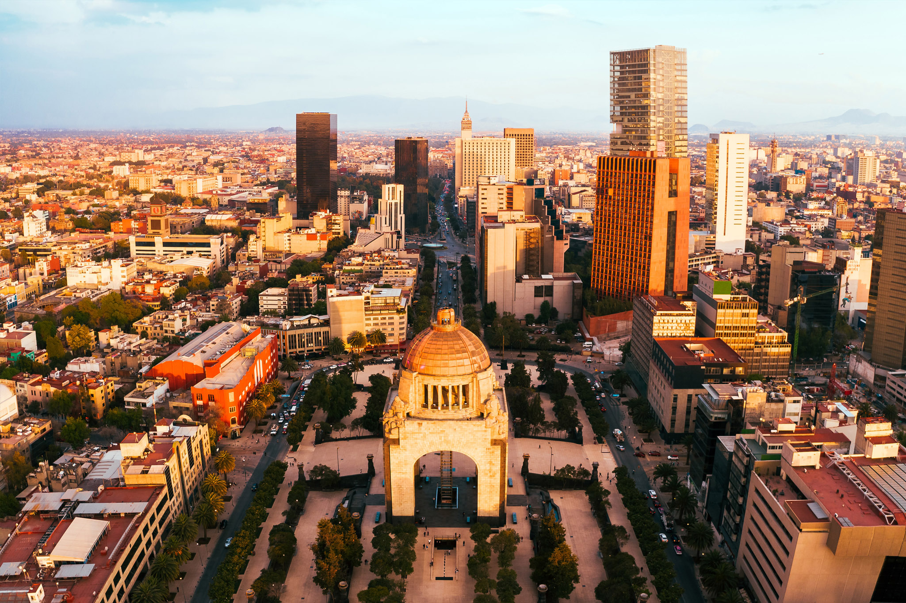
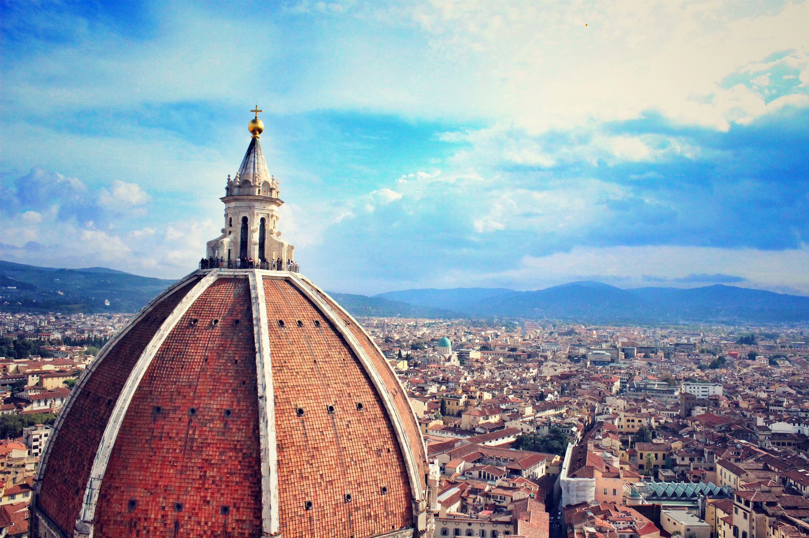
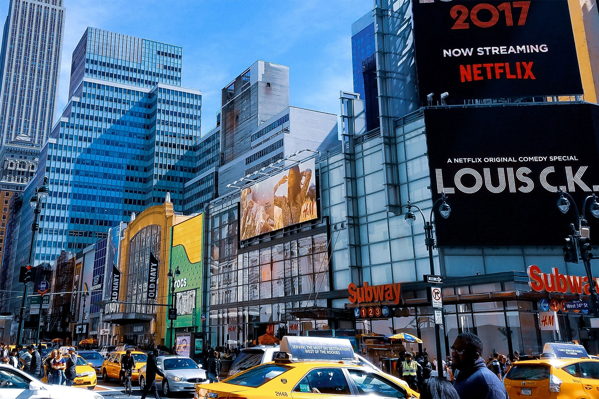
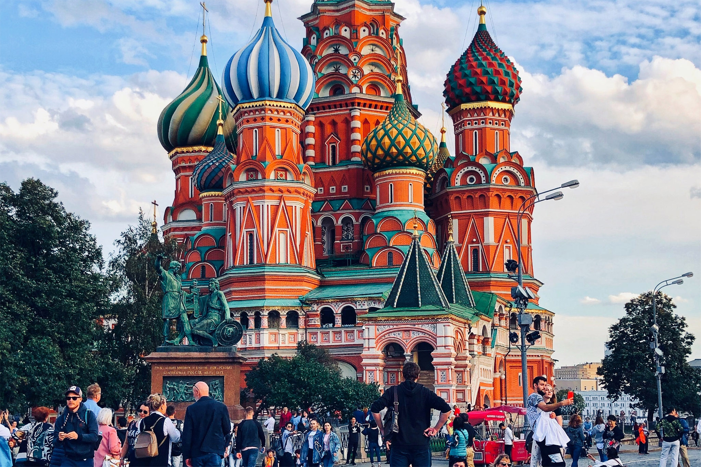
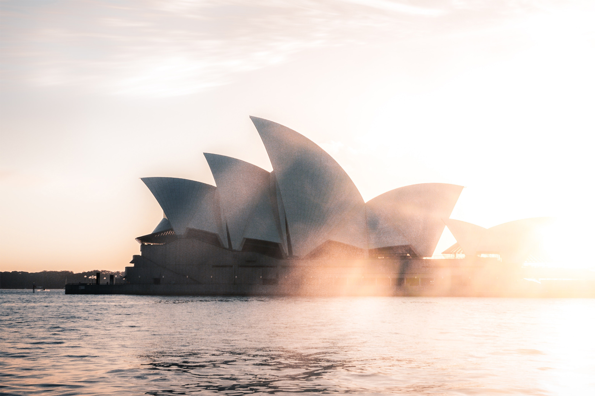
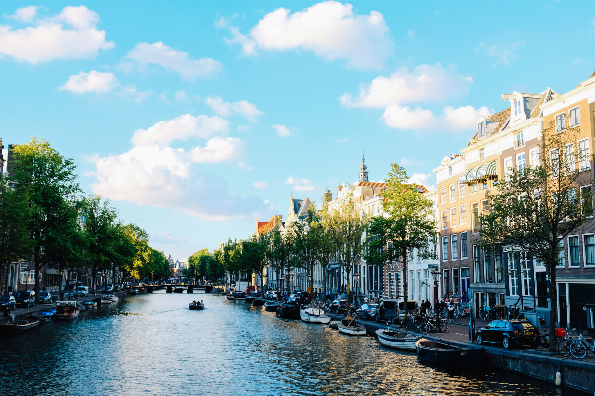

Tokyo
Tokyo, thủ đô Nhật Bản, nổi tiếng với sự kết hợp hài hòa giữa truyền thống và hiện đại. Từ đền Meiji, tháp Tokyo, đến những khu phố mua sắm sầm uất như Shibuya và Shinjuku.
Japan

Cairo
Cairo, thủ đô Ai Cập, là cửa ngõ khám phá các kim tự tháp Giza, tượng Nhân Sư và bảo tàng Ai Cập với vô số cổ vật lịch sử hàng nghìn năm tuổi.
Egypt

Rome
Rome, thành phố vĩnh hằng của Ý, là kho tàng kiến trúc cổ điển với đấu trường Colosseum, đền Pantheon và quảng trường La Mã.
Italy

Paris
Paris, “kinh đô ánh sáng” của Pháp, nổi tiếng với tháp Eiffel, bảo tàng Louvre, nhà thờ Đức Bà và những quán cà phê lãng mạn ven đường.
France

Mexico
Mexico City, thủ đô Mexico, hòa quyện giữa văn hóa Aztec cổ đại và kiến trúc thuộc địa Tây Ban Nha, cùng những khu chợ truyền thống đầy màu sắc.
Mexico

Florence
Florence, cái nôi của thời kỳ Phục Hưng Ý, nổi bật với nhà thờ Santa Maria del Fiore, phòng trưng bày Uffizi và cây cầu Ponte Vecchio.
Italy

New York
New York, thành phố không bao giờ ngủ, nổi tiếng với tượng Nữ thần Tự do, công viên Central Park, Quảng trường Thời Đại và Wall Street.
USA

Moscow
Moscow, thủ đô Nga, nổi bật với Quảng trường Đỏ, điện Kremlin, nhà thờ Thánh Basil và những công trình kiến trúc hoành tráng.
Russia
San Francisco
San Francisco, thành phố bên vịnh California, nổi tiếng với cầu Cổng Vàng, nhà tù Alcatraz và những con đường dốc đặc trưng.
USA

Sydney
Sydney, thành phố lớn nhất Australia, nổi tiếng với nhà hát Opera House, cầu cảng Sydney và những bãi biển đẹp như Bondi.
Australia

Amsterdam
Amsterdam, thủ đô Hà Lan, được mệnh danh là thành phố của những con kênh, bảo tàng Van Gogh và cuộc sống nhộn nhịp của xe đạp.